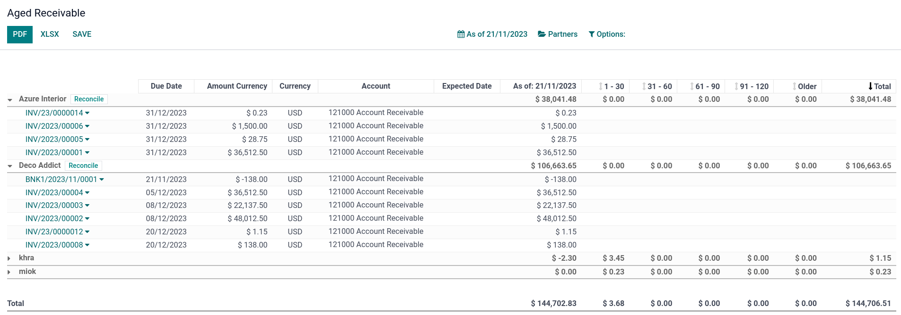
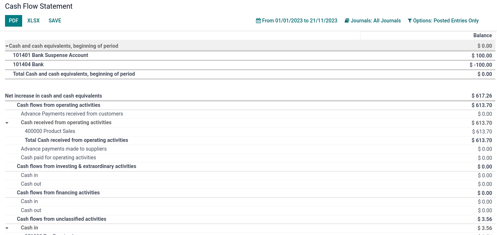
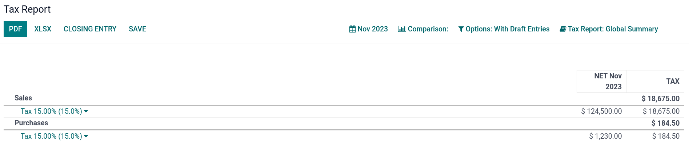

Reportes¶
Principales reportes disponibles¶
Odoo incluye reportes genéricos y dinámicos disponibles para todos los países, sin importar el paquete de localización instalado:
Balance general
Estado de resultados
Resumen ejecutivo
Libro mayor
Cuentas por pagar antiguas
Cuentas por cobrar antiguas
Estado de cuenta de flujo de efectivo
Reporte de impuestos
Los reportes se pueden anotar, imprimir y desglosar para ver sus detalles (pagos, facturas, asientos contables, etc.) si hace clic en la flecha hacia abajo. También se pueden exportar a formato PDF o XLSX si hace clic en PDF o XLSX en la parte superior de la página.

Puede comparar valores entre varios periodos con el menú Comparación, luego deberá seleccionar los periodos que desea comparar.

Balance general¶
El balance general muestra un resumen de los activos, pasivos y el capital de su empresa en una fecha determinada.

Estado de resultados¶
El reporte de estados de resultados (o estado de cuenta de resultados) muestra los ingresos netos de su empresa al deducir los gastos de los ingresos correspondientes al periodo del reporte.

Resumen ejecutivo¶
El resumen ejecutivo le permite consultar con rapidez todas las cifras necesarias para gestionar su empresa.
En términos básicos, esto es lo que reporta cada elemento en la siguiente sección:
- Rendimiento:
- Margen de ganancias brutas:
La contribución de todas las ventas realizadas por su empresa menos los costos directos necesarios para realizar esas ventas (por ejemplo, mano de obra, materiales y más).
- Margen de ganancias netas:
La contribución de todas las ventas realizadas por su empresa menos los costos directos necesarios para realizar esas ventas y los gastos generales fijos de su empresa (por ejemplo, electricidad, alquiler, impuestos a pagar como resultado de esas ventas, entre otras cosas).
- Retorno de la inversión (por año):
La proporción de la ganancia neta obtenida en relación con la cantidad de activos que la empresa utilizó para obtenerlas.
- Posición:
- Periodo promedio de cobro:
El número promedio de días que sus clientes tardan en pagarle (por completo) en todas sus facturas.
- Periodo promedio de pago:
El número promedio de días que tarda en pagar a sus proveedores (por completo) en todas sus facturas.
- Pronóstico de efectivo a corto plazo:
La cantidad de efectivo que se espera que entre o salga de su empresa en el próximo mes, es decir, el saldo de su cuenta de ventas del mes menos el saldo de su cuenta de compras del mes.
- Activos circulantes frente a pasivos:
También se le conoce como razón circulante y es la relación de activos circulantes (activos que podrían convertirse en efectivo dentro de un año) con respecto a los pasivos circulantes (pasivos que vencen el próximo año). Por lo general, se utiliza para medir la capacidad de una empresa para pagar su deuda.

Libro mayor¶
El reporte de libro mayor muestra todas las transacciones de todas las cuentas durante el rango de fechas seleccionado. El resumen del reporte inicial muestra los totales de cada cuenta para que pueda visualizar un reporte detallado de las transacciones o de cualquier excepción. Este reporte le ayuda a revisar cada transacción que ocurrió durante un periodo específico.

Cuenta antigua por pagar¶
Realice el reporte de detalles de las cuentas antiguas por pagar para mostrar información sobre facturas individuales, notas de crédito y sobrepagos específicos que usted debe, así como el tiempo que lleva sin pagarlos.

Cuentas por cobrar antiguas¶
El reporte de cuentas antiguas por cobrar muestra las facturas de ventas pendientes de pago durante el mes seleccionado y varios meses anteriores.
Estado de flujos de efectivo¶
El estado de cuenta de flujo de efectivo muestra cómo los cambios en el balance general y los ingresos afectan al efectivo y a los equivalentes de efectivo. También analiza las actividades de operación, de inversión y de financiación.
Reporte de impuestos¶
Este reporte permite ver los importes netos y de impuestos de todos los impuestos agrupados por tipo (venta/compra).
